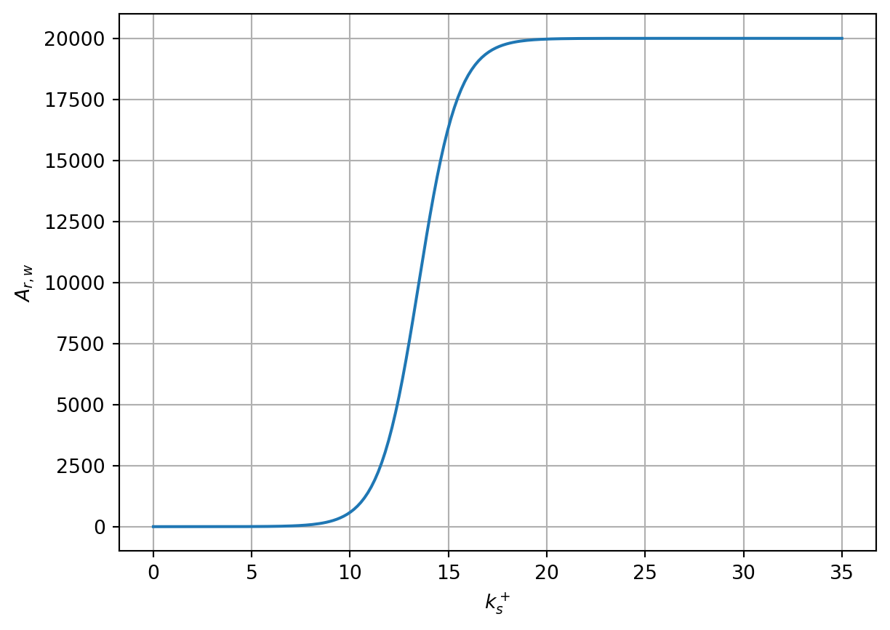
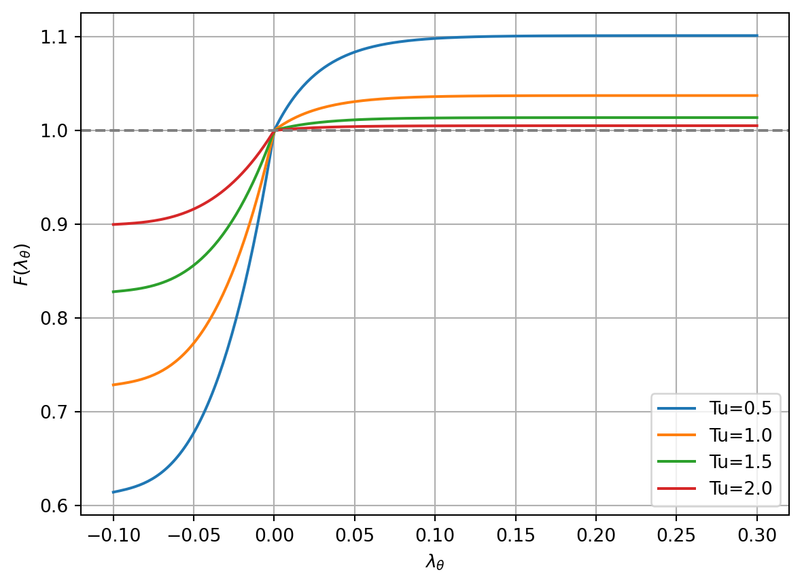
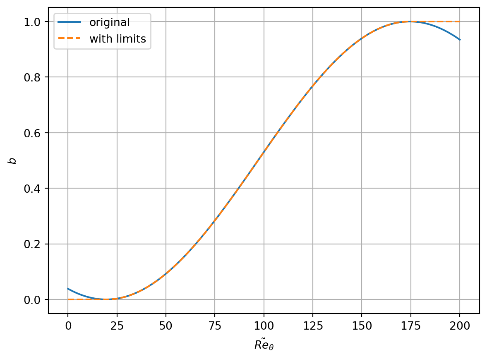
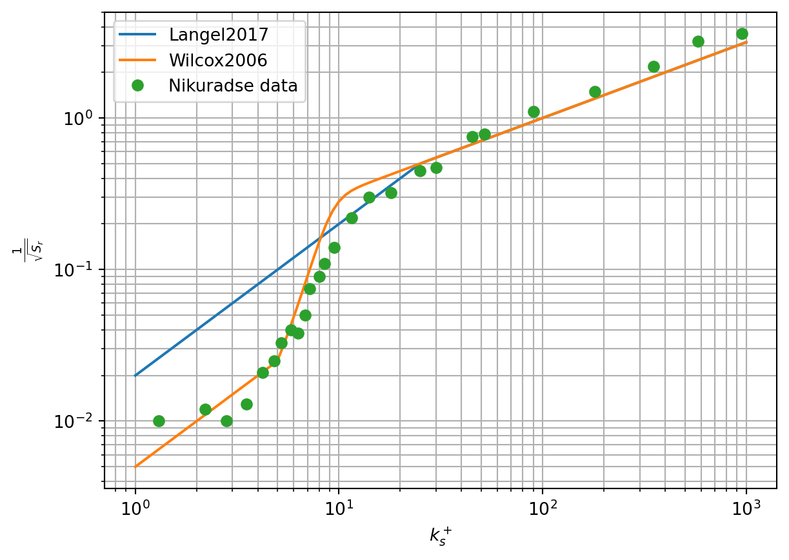
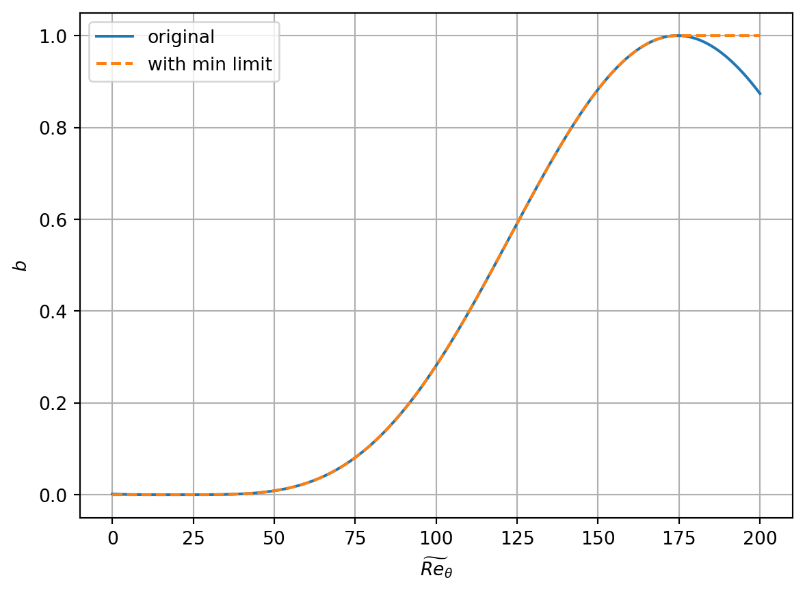
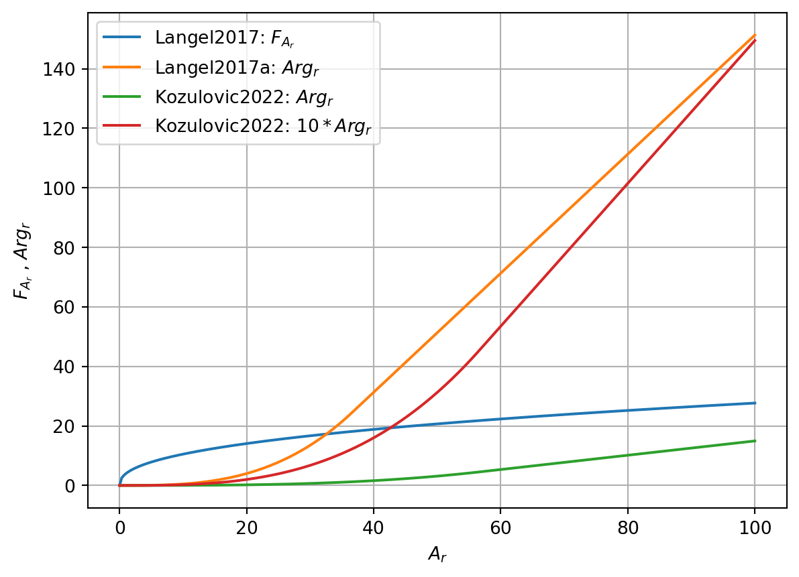

kOmegaSSTLMRough model
Transition Models on Rough Walls
The transition model on rough walls is based on a combination of the four-equation transition model \(\gamma - \tilde{Re}_\theta\) according to Langtry and Menter (Langtry and Menter 2009) with an additional equation for the amplification factor \(A_r\) according to Dassler et al. (Dassler, Kožulović, and Fiala 2010). In subsequent publications, this model has been presented in various variants and calibrations, e.g., Langel et al. (Langel et al. 2017a) or Kožulović et al. (Kožulovič et al. 2022).
The transition model according to Dassler et al. contains the following three equations: \[ \begin{aligned} \frac{\partial (\rho \gamma)}{\partial t} + \frac{\partial (\rho u_j \gamma)}{\partial x_j} &= P_\gamma - E_\gamma + \frac{\partial}{\partial x_j} \left[ \left( \mu + \frac{\mu_t}{\sigma_f} \right) \frac{\partial \gamma}{\partial x_j} \right], \\ \frac{\partial (\rho \tilde{Re}_\theta)}{\partial t} + \frac{\partial (\rho u_j \tilde{Re}_\theta)}{\partial x_j} &= P_\theta + \frac{\partial}{\partial x_j} \left[ \sigma_\theta \left( \mu + \mu_t \right) \frac{\partial \tilde{Re}_\theta}{\partial x_j} \right], \\ \frac{\partial (\rho A_r)}{\partial t} + \frac{\partial (\rho u_j A_r)}{\partial x_j} &= P_{A_r} + \frac{\partial}{\partial x_j} \left[ \sigma_{A_r} \left( \mu + \mu_t\right) \frac{\partial A_r}{\partial x_j} \right]. \end{aligned} \]
NoteNote
The role of \(\sigma_f\) and other \(\sigma\) coefficients in the formulas is different! However, the value of \(\sigma_f\) is 1, so it probably doesn’t matter.
In the original article (Dassler, Kožulović, and Fiala 2010), the source term in the equation for \(A_r\) is applied in the first layer of cells near the wall. This does not make sense from a mathematical point of view, and therefore this original model was not tested. In a later article (Dassler, Kožulović, and Fiala 2012), a version is presented where a boundary condition for \(A_r\) is prescribed at the wall and the source term is applied throughout the entire computational domain. In this model, the value is \(\sigma_{A_r} = 10\) and at the wall, the following boundary condition for \(A_r\) is considered \[ A_{r,w} = 8 k_s^+, \quad \text{kde } k_s^+ = \frac{u_\tau k_s}{\nu}. \]
The original source term in the equation for \(\tilde{Re}_\theta\) \[ P_\theta = c_{\theta t}\frac{\rho}{T}\left(Re_{\theta} - \tilde{Re}_\theta \right) (1 - F_{\theta t}) \tag{1}\]
was modified to the form \[ P_\theta = c_{\theta t}\frac{\rho}{T}\left[\left(Re_{\theta} - \tilde{Re}_\theta \right) (1 - F_{\theta t}) - Arg_r\right], \] where \(Arg_r\) is a function dependent on \(A_r\), which shifts the transition onset towards lower values of \(\tilde{Re}_\theta\) depending on the wall roughness.
However, the functional form of \(Arg_r\) is not published in the article. Therefore, this model was not further tested.
Model according to Langel et al. (2017) (Langel2017)
The model according to Langel et al. (Langel et al. 2017a) uses the same approach as Dassler et al., but with different calibration and provides a specific functional form for \(Arg_r\). In this model, the value is \(\sigma_{A_r} = 30\) and the boundary condition at the wall is for the case of flat plate flow (see (Langel et al. 2017a, 109)) \[ A_{r,w} = \frac{20000}{1 + e^{13.5 - k_s^+}}. \]
NoteNote
There is apparently an error in the notation of the boundary condition for \(A_{r,w}\) in the original article (Langel et al. 2017a), see comparison with the graph on page 103 in (Langel et al. 2017a). The above version corresponds to this graph.
NoteNote
For airfoil flow, a different correlation is used for the boundary condition. The value 13.5 in the exponent is replaced by approximately 27, see the graph on page 103 in (Langel et al. 2017a).
The source term in the equation for \(\tilde{Re}_\theta\) is modified as \[ P_\theta = c_{\theta t}\frac{\rho}{T}\left[\left(Re_{\theta} - \tilde{Re}_\theta \right) (1 - F_{\theta t}) - b F_{A_r}\right] \] kde \[ F_{A_r} = \begin{cases} 4 A_r^{0.42} + 4 A_r \left(\frac{1}{F(\lambda_\theta)}\right)(1 - F_{\theta t}), & \text{for } F(\lambda_\theta) \le 1, \\ 4 A_r^{0.42} + 4 A_r \left(\frac{1}{F(\lambda_\theta)}\right)^{0.6}(1 - F_{\theta t}), & \text{for } F(\lambda_\theta) > 1. \end{cases} \]
The function \(F(\lambda_\theta)\) is defined as in the original model by Langtry and Menter Langtry and Menter (2009) as \[ F(\lambda_\theta) = \begin{cases} 1 + (12.986 \lambda_\theta + 123.66 \lambda_\theta^2 + 405.689 \lambda_\theta^3) e^{-\left(Tu/1.5\right)^{1.5}} , & \text{for } \lambda_\theta \le 0, \\ 1 + 0.275\left(1 - e^{-35\lambda_\theta}\right)e^{-\left(Tu/0.5\right)}, & \text{for } \lambda_\theta > 0, \end{cases} \]

The damping factor \(b\) is given by the relation \[ b = 0.5\sin\left(\frac{\pi}{155}\tilde{Re}_\theta - \frac{97\pi}{155}\right) + 0.5. \] In this function, it is apparently appropriate to limit the value of \(\tilde{Re}_\theta\) to the interval \([19.5, 174.5]\), i.e., \[ b = 0.5\sin\left(\frac{\pi}{155}\max(\min(\tilde{Re}_\theta, 174.5), 19.5) - \frac{97\pi}{155}\right) + 0.5. \tag{2}\]

Furthermore, a modified boundary condition for \(\omega\) at the wall is used according to (Langel et al. 2017a) based on the work of (Wilcox 1994): \[ \omega_w = \frac{u_\tau^2 S_r}{\nu}, \] kde \[ S_r = \begin{cases} \left(\frac{50}{k_s^+}\right)^2 & \text{for } k_s^+ \le 25, \\ \frac{100}{k_s^+} & \text{for } k_s^+ > 25. \end{cases} \tag{3}\]
Compared to the model according to (Langel et al. 2017a), a modification of the boundary condition for \(\omega\) in the case of a smooth wall is used in the implementation \[ \omega_w = \begin{cases} 10 \frac{6\nu}{\beta_1 y_1^2} & \text{for } k_s^+ \le \sqrt{\frac{2500\beta_1}{60}} y^+_1, \\ \frac{u_\tau^2 S_r}{\nu} & \text{for } k_s^+ > \sqrt{\frac{2500\beta_1}{60}} y^+_1. \end{cases} \tag{4}\]
In the newer edition of the book (Wilcox 2006), this boundary condition for a smooth wall is given in the form \[
S_r = \begin{cases}
\left(\frac{200}{k_s^+}\right)^2 & \text{for } k_s^+ \le 5, \\
\frac{100}{k_s^+} + \left[ \left(\frac{200}{k_s^+}\right)^2 - \frac{100}{k_s^+}\right]
e^{5-k_s^+}& \text{for } k_s^+ > 5.
\end{cases}
\]
However, this form of boundary condition was not used in the calculations. Furthermore, (Wilcox 2006) presents a boundary condition for a rough wall for the low Reynolds version of the model. It differs from the above condition only in the coefficient of the second branch, where 60 is used instead of 100 (in both places). This version was also not used in the calculations.

Model according to Langel et al. (2017a) (Langel2017a)
In another publication (Langel et al. 2017b), a different version of the Langel2017 model is presented, which uses different calibrations and a boundary condition for \(A_r\) at the wall. The value of \(\sigma_{A_r}\) in this model is set to \(\sigma_{A_r} = 10\) and the boundary condition at the wall is \[
A_{r,w} = c_{r1} k_s^+,
\] where \(c_{r1} = 8\). The function \(F_{A_r}\) in the equation for \(\tilde{Re}_\theta\) is \[
F_{A_r} = \begin{cases}
c_{r2} Ar^3, & \text{for } Ar < C_{Ar}, \\
c_{r3} (Ar - C_{Ar}) + c_{r2} C_{Ar}^3, & \text{for } Ar \ge C_{Ar},
\end{cases}
\] where \(c_{r2} = 0.0005\), \(c_{r3} = 2\) and \(C_{Ar} = \sqrt{c_{r3}/3c_{r2}}\), see (Langel et al. 2017b) [p. 65]. The coefficient \(b\) in this version of the model is given by the relation (compare with Equation 2) \[
b = \left(\frac{1}{2}\sin\left(\frac{\pi}{155}\widetilde{Re}_\theta - \frac{97\pi}{155}\right) + \frac{1}{2}\right)^2.
\tag{5}\] As with the Langel2017 model, it is appropriate to limit the value of \(\tilde{Re}_\theta\) to the interval \([19.5, 174.5]\) in this relation.

Model according to Kožulović et al. (2022) (Kozulovic2022)
In the most recent publication (Kožulovič et al. 2022), another version of the transition model on rough walls is presented with different calibration and a boundary condition for \(A_r\) at the wall. The model apparently originates from the publication (Dassler, Kožulović, and Fiala 2012) and supplements some correlations that were not included in the original publication.
The source term in the equation for \(\tilde{Re}_\theta\) is defined by Equation 1 with the function \(Arg_r\) defined as \[ Arg_r = \begin{cases} A_r^3\cdot 0.000025, & \text{for } A_r < A_{r,s}, \\ 0.24 \cdot A_r - 9.05094, & \text{for } A_r \ge A_{r,s}, \end{cases} \] where \(A_{r,s} = \sqrt{0.24/3/0.000025} \approx 56.5685\).
The boundary condition for \(A_r\) at the wall is the same as in the Langel2017a model, i.e., \[
A_{r,w} = 8 k_s^+.
\]
The value of \(\sigma_{A_r}\) is not specified in the article, but apparently the value \(\sigma_{A_r} = 10\) is used, as in the model according to (Dassler, Kožulović, and Fiala 2012). In the original model according to (Dassler, Kožulović, and Fiala 2012), the damping function \(b\) is also mentioned in the text. However, its functional form is not given. Therefore, the function according to Equation 5 was used. Furthermore, for reasonable agreement with experiment, it was necessary to multiply \(Arg_r\) by a coefficient of 10, i.e., \[ P_\theta = c_{\theta t}\frac{\rho}{T}\left[\left(Re_{\theta} - \tilde{Re}_\theta \right) (1 - F_{\theta t}) - 10 b \cdot Arg_r\right]. \tag{6}\]
Model Comparison
The models differ both in the values of \(\sigma_{A_r}\) and the boundary condition for \(A_r\) at the wall, as well as in the modification of the source term in the equation for \(\tilde{Re}_\theta\). The graph below shows a comparison of the function \(F_{A_r}\) or \(Arg_r\) for different models (for \(b=1\) and \(F_\theta=0\)).

Notes on OpenFOAM Implementation
The model is set up in the turbulenceProperties dictionary as follows for the kOmegaSSTLMRough model:
simulationType RAS;
RAS
{
RASModel kOmegaSSTLMRough;
roughnessModel Kozulovic2022; // Langel2017, Langel2017a, Kozulovic2022
turbulence on;
printCoeffs on;
maxLambdaIter 100;
}Moreover, the boundary condition for the variable Ar at the wall must be set to roughnessAmplification for Kozulovic2022 or Langel2017 models, or to roughnessAmplificationLangel for the Langel2017a model.
References
Dassler, P., D. Kožulović, and A. Fiala. 2010. “Modelling of Roughness-Induced Transition Using Local Variables.” V European Conference on Computational Fluid Dynamics ECCOMAS CFD, 1–17. http://www.aircraft-engines.com/en/technologies/engineering_news/others/Fiala_Modelling_of_roughness-induced_en.pdf.
———. 2012. “Extension of the γ-ReΘ Transition Model for Roughness-Induced Transition.” In Proceedings of the 50th AIAA Aerospace Sciences Meeting Including the New Horizons Forum and Aerospace Exposition. https://doi.org/10.2514/6.2012-0593.
Kožulovič, Dragan, Nemo Alexander Juchmann, Alexander Führing, and Christoph Bode. 2022. “Transition Model Extension for Roughness Effects.” In Proceedings of ASME Turbo Expo 2022. ASME. http://asmedigitalcollection.asme.org/GT/proceedings-pdf/GT2022/86113/V10CT32A042/6937172/v10ct32a042-gt2022-83277.pdf.
Langel, Christopher Michael, Raymond Chow, C P Van Dam, and David Charles Maniaci. 2017a. “RANS Based Methodology for Predicting the Influence of Leading Edge Erosion on Airfoil Performance.” Sandia National Laboratories (SNL). https://doi.org/10.2172/1404827.
Langel, Christopher Michael, Raymond Chow, Case P. Van Dam, and David Charles Maniaci. 2017b. “A Transport Equation Approach to Modeling the Influence o f Surface Roughness on Boundary Layer Transition.” Sandia. https://energy.sandia.gov/wp-content/uploads/2017/10/LEE_Langel1_SAND2017-10670.pdf.
Langtry, Robin Blair, and Florian R. Menter. 2009. “Correlation-Based Transition Modeling for Unstructured Parallelized Computational Fluid Dynamics Codes.” AIAA Journal 47: 2894–2906. https://doi.org/10.2514/1.42362.
Wilcox, David C. 1994. Turbulence Modeling for CFD. DCW Industries.
———. 2006. Turbulence Modeling for CFD. 3rd edition. DCW Industries.